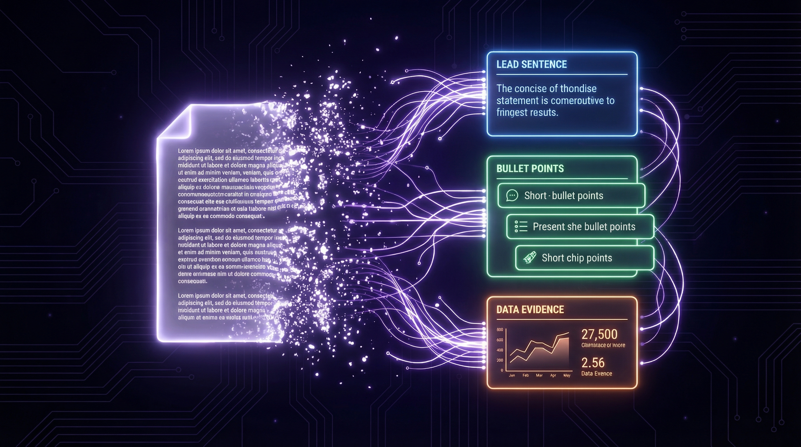

The Core Strategy
Architect Your Content for Machine Inference
The most effective, sustainable, and risk-free AEO/GEO strategy: structure your own content so AI can extract precise answers instantly, without burning computational overhead.

The Answer Capsule Formula
40–80 words, placed immediately beneath every interrogative heading. This is the atomic unit of AEO.
The Lead Line
A concise 1–2 sentence direct conclusion in plain English. Written to be quoted verbatim. No hedging. No preamble.
Structural Support
3–5 bullet points providing the core mechanism, essential criteria, or sequential steps. Scannable by humans and machines alike.
• Requires interrogative heading format
• Uses explicit question-answer pairs
• Avoids ambiguous pronouns
• Includes named entities and credentials
Verifiable Evidence
A specific data point, named source, or real-world example. Satisfies the LLM's requirement for factual grounding during synthesis.
Higher AI citation rate for organizations publishing weekly vs. monthly
65% of AI crawler hits target content revised within the past 12 months — freshness is not optional in GEO
Interrogative Architecture
Format H2 and H3 tags as explicit questions mirroring user prompts. "What marketing services do you offer?" beats "Our Services." This aligns document structure with how LLMs process natural language at inference time.
Tables Over Paragraphs
AI models demonstrate dramatically higher affinity for structured tables and clean bullet lists vs. dense prose. Lists improve AI citation recall by up to 40%. Convert every comparison into an "Answer Table."
Entity Density
Abandon keyword density. Map one primary entity to 3–6 related secondary entities — recognized frameworks, named experts, industry standards. LLMs map relationships; dense entity networks add semantic weight.
Google's Experience, Expertise, Authoritativeness, and Trustworthiness (E-E-A-T) framework remains the primary trust filter for generative models selecting which sources to cite and synthesize.
What Destroys Your E-E-A-T
- Anonymous "The Team" authorship
- No visible credentials or professional bio
- Stock photography for staff and leadership
- No links to author's other published work
- Outdated "last updated" timestamps
- No sameAs schema linking author identities
What Builds Your E-E-A-T
- Named authors with detailed professional bios
- Visible credentials ("Reviewed by [Name], [Cert]")
- Real author photos, consistent identity across channels
- sameAs schema linking to LinkedIn, published work
- Frequent publication dates with substantive updates
- First-person experience language in content
Generative LLMs exhibit a pronounced freshness bias — actively prioritizing recent content to avoid hallucinating outdated information in real-time responses. This isn't a preference; it's an architectural requirement for accurate synthesis.
The Evidence
- Weekly publishers achieve 67% higher AI citation rates vs. monthly publishers
- Up to 65% of AI crawler hits target content revised within 12 months
- Content older than 18 months is frequently bypassed by RAG retrieval systems
- Pages with recent "Last Updated" timestamps are prioritized in AI Overviews
The Refresh Protocol
- Quarterly audits of all top-revenue pages
- Update statistics, replace outdated references
- Only update publication date after substantive changes
- Integrate new industry data and research every quarter
- Re-submit updated pages via Google Search Console